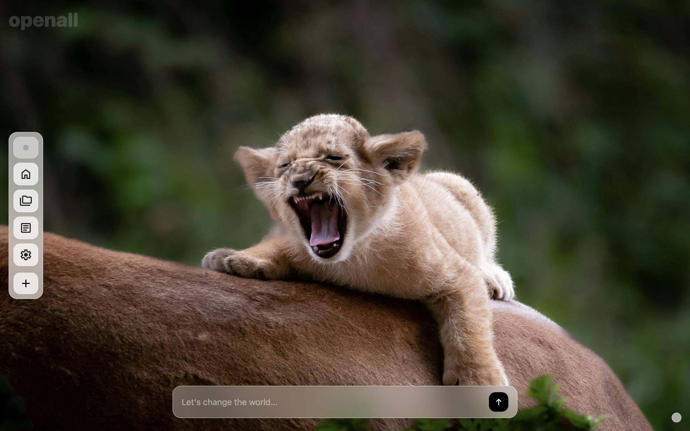
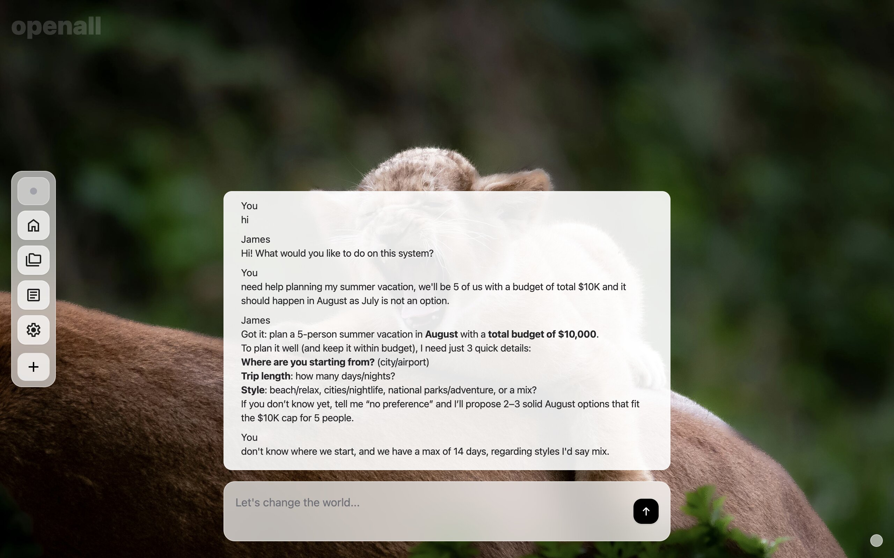
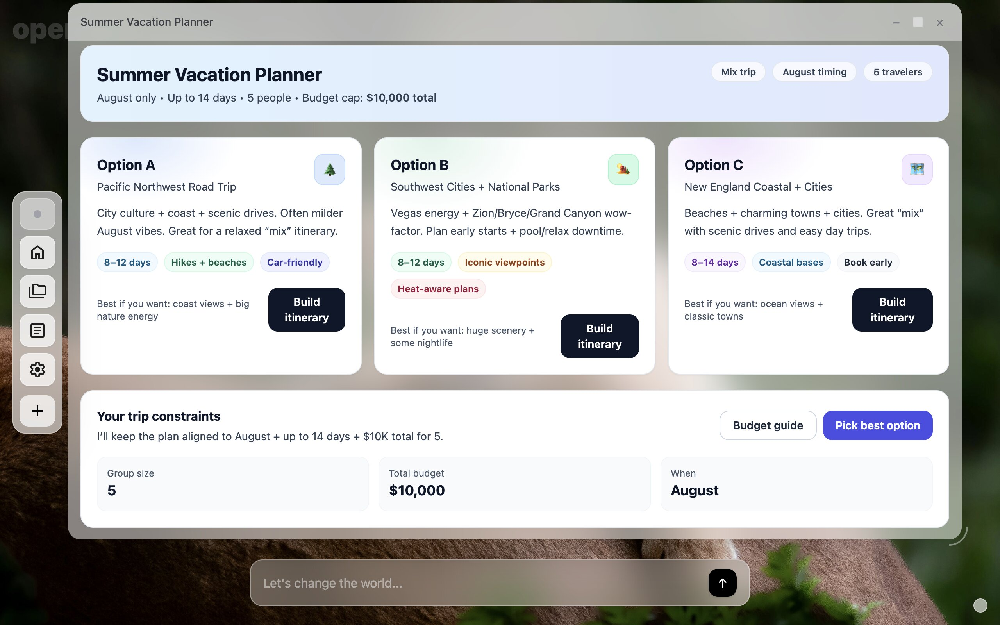

Artificial Super Assistance
Say what you want. openall delivers it.
A super assistant with full memory of your work,
your context, and your intent
without code, without friction.
The Shift
The code between a user and an LLM was never architecturally necessary. It existed because models weren't yet capable of being the runtime themselves. That world is over. The stack collapses. What remains is the only two things that were ever real: intent and result.
Before openall
With openall
That's the entire stack.
Artificial Super Assistance
openall turns your device into an ASA (an Artificial Super Assistant) that knows your context, remembers everything, controls your environment, and delivers exactly what you need, the moment you need it. No downloads. No configuration. Just intent, and a persistent tool that lives on your machine.
01
Personal Productivity
"I need a daily command center: my meetings, my files, my emails, my calendar. Let me book a restaurant or move a file from the same place."
What ASA delivers
A persistent, windowed tool that surfaces everything relevant to your day. It knows your schedule, your open threads, your preferences. It acts: books, drafts, moves, reminds, without switching apps or losing context.
02
Professional Workflow
"Give me a tool to run my weekly review: pull the data, update the deck, flag what changed, and send the summary to the team."
What ASA delivers
A workflow instrument that runs on your schedule. It reads your data sources, rewrites the relevant slides, surfaces anomalies, and drafts the message, all in one session, with full memory of last week's run.
03
The Impossible Demo
"I'm closing a deal. I need a room for it."
What ASA delivers
A bespoke deal room that has never existed before and will never exist again. A windowed interface built around this relationship, this timeline, this person's way of thinking. Not a dashboard pulled from a template. Not a notification pipeline. A living instrument: the emails on one side, the open questions on the other, the silence tracker in the corner that knows this stakeholder always goes quiet before they say no. It remembers last Tuesday. It updates as the deal moves. When it's done, you close it. It was always only ever yours.
Every one of these tools was described in plain language, delivered instantly, and runs where you need it, with persistent memory and a native windowed interface. No code was written at any point.
How it works
01 / Describe
No syntax. No boilerplate. No scaffolding. Describe your intent in plain language. A tool. A workflow. A data transformation. A product. Anything.
02 / Deliver
Your chosen model generates, executes, and evolves the result in real time. No code is written. No file is saved. The model is the application.
03 / Remember
openall carries full memory of everything you have ever asked for. Every tool, every result, every preference: remembered, refined, and ready the next time you need it.
04 / Act
openall controls your files, your apps, your calendar, your communications. It acts on your behalf: not just generating answers, but getting things done.
In action
A user. A sentence. A running result. No code written at any point.
01. The platform is installed and ready for use

02. The user asks in plain language.

03. openall runs it. No code written at any point.

What you get
Not a suggestion. Not a template. A live, working instrument built from your sentence and running in the platform instantly. From nothing, in under three seconds. You will not believe it until you see it.
Every tool. Every result. Every preference. Every correction you have ever made. openall carries your full history into every session and gets sharper each time. You will never explain yourself twice.
Calendar. Email. Files. Browser. CRM. openall reaches into all of it and gets the work done without switching tabs, exporting data, or repeating instructions. One sentence. Everything handled.
No template was pulled. No workflow was shared. The tool openall just created was built around your intent, your context, your moment, and only yours. When you close it, it is gone. It was always only ever yours.
No install. No setup. Log in and everything is waiting: your full history, every tool you have ever built, every result you have ever produced. openall is ready the moment you are, from any device, anywhere.
One instruction. One result. The gap between what you used to do and what you can do now is the same as the gap between a letter and an email. You are not going back.
openall
Ready now.